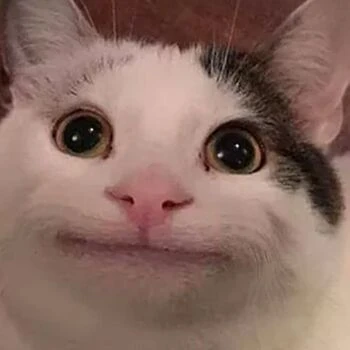

| TIPOS DE GATO | ||||
| Gato Medroso😨 | Gato Rockeiro🤘 | Gato Gourmet🍽 | Gato Preguiçoso💤 | Gato Aventureiro🧭 |
|  |
Gatos são bichanos fofos e, ao mesmo tempo, frios, dependendo do tipo de gato.
Aqui, neste site, nós listamos os tipos mais BIZARROS de gatos. Criados pelos
egípcios, gatos são animais astutos que iludem o coração de seus donos.
Tem medo de tudo e qualquer coisa, desde barulhos altos até movimentos rápidos.
Seu lugar favorito é debaixo da cama, onde se sente seguro e protegido.
| meeeeeeeeeeeeeeeeeeeeeeeeeeeeeeow |
|
meeeeeeeeeeeeeeeeeeeeeeeeeeeeeeow |
Ama fazer barulho, correr pela casa à noite e brincar com objetos que fazem som.
Seu comportamento é imprevisível e cheio de energia, sempre pronto para uma
nova aventura.
Adora experimentar diferentes tipos de comida e só se satisfaz com os petiscos mais
sofisticados. Seu prato favorito é uma mistura de atum fresco e frango grelhado.
Passa a maior parte do dia dormindo e relaxando em lugares confortáveis. Seu passatempo
favorito é se espreguiçar no sol e tirar longos cochilos.
Sempre explorando novos territórios, escalando móveis e investigando todos os cantos
da casa. Está sempre em busca de novas experiências e adora desafios físicos.
©todas as imagens retiradas da internet
| Create by Stevenn | |||